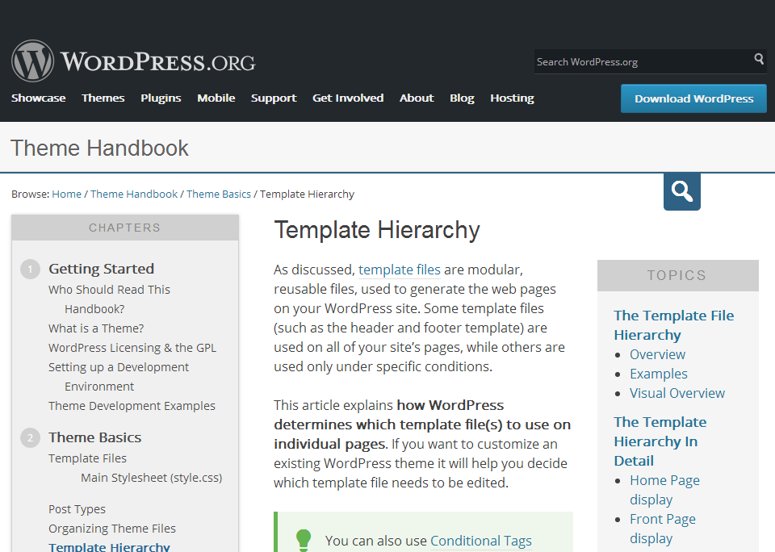

rtyertyertyertyertyerty
sdfgsdfgsdfgsdfgsdsdfgg
sdfgsdfgsdfgsdfg

Put simply, WordPress searches down through the template hierarchy until it finds a matching template file. To determine which template file to use, WordPress:
With the exception of the basic index.php template file, you can choose whether you want to implement a particular template file or not.